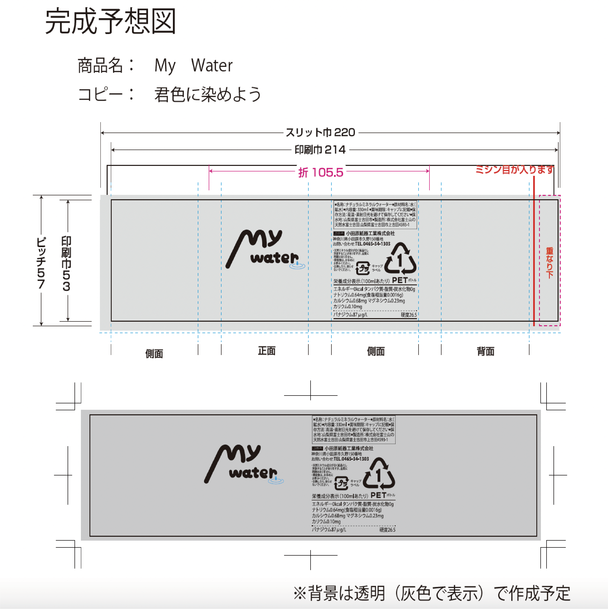
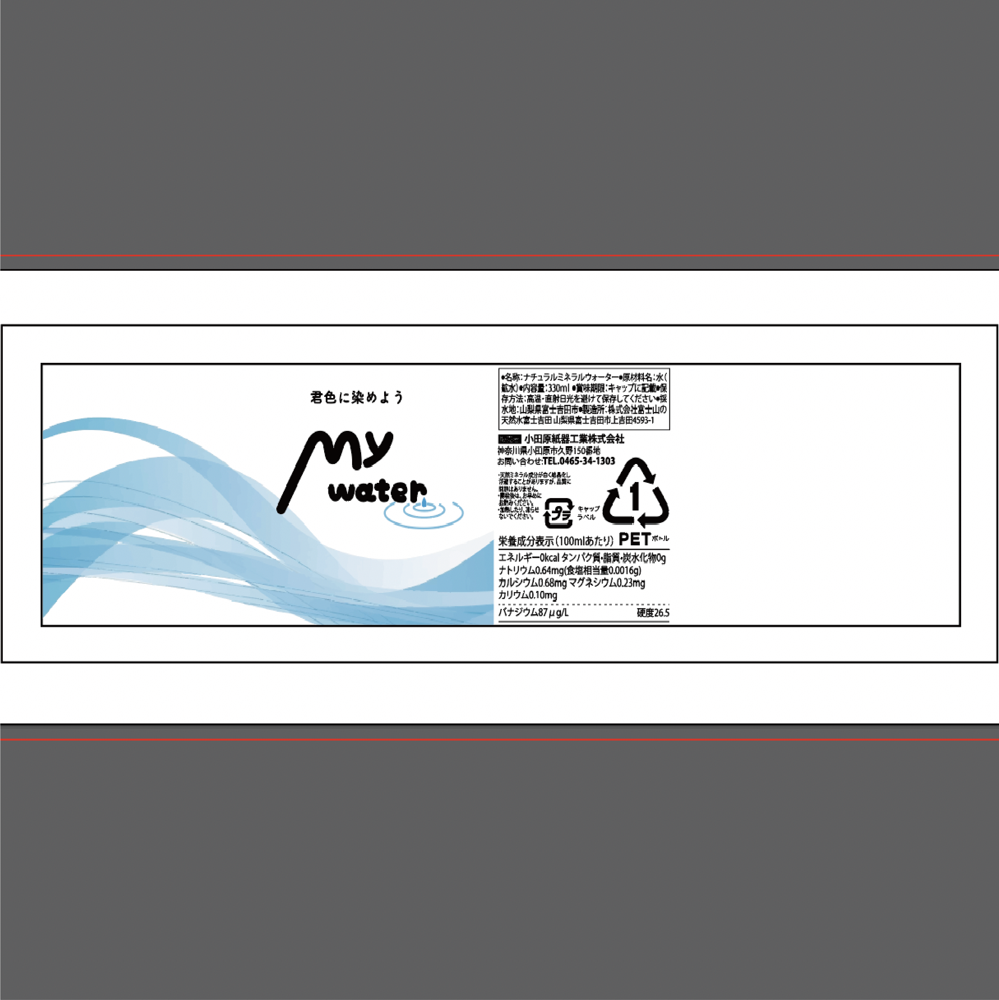

My water
2022
Illustrator / Premiere Pro

個人作品「My water」
大学の授業課題で制作した作品。自身でオリジナルの飲料商品を生み出し、その新商品飲料商品を宣伝するテレビCMを制作するという課題だが、私は「My water」という水のブランドを制作した。この作品のコピーは「君色に染めよう」で、皆が自分らしく個性を大切に生きていいというメッセージを込めている。そのため、ペットボトルにつけるラベルは透明にし、手にした人によって異なったデザインのラベルになるようなデザインを行った。


動画を制作する上で最も意識した場所は動画中盤の灰色の景色に色がつく箇所であり、「この世界はいろんな色で満ちている」というメッセージを視覚的にも伝わるように表現した。最終的に完成したCMは授業内の生徒投票により最もいい評価をいただいた。
完成した動画はこちら→https://d.kuku.lu/15e3b31db